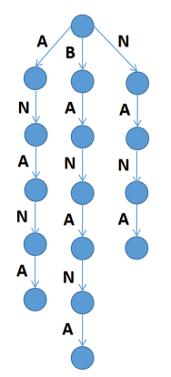
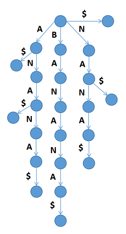
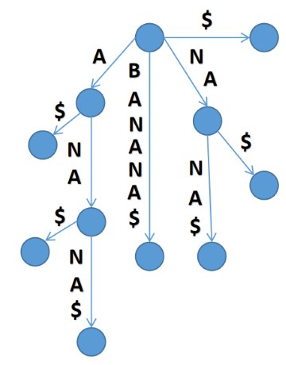
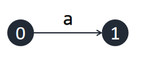
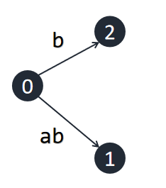
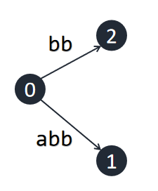
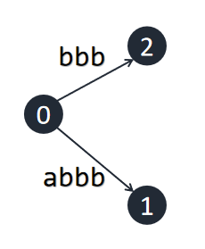
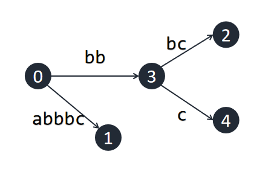
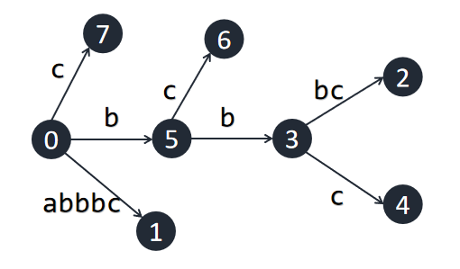
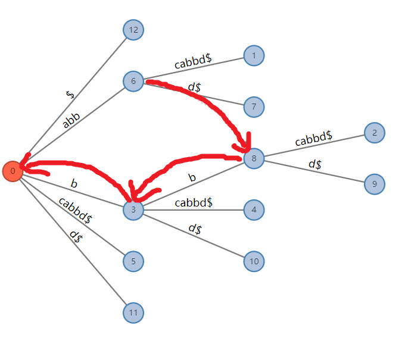

本文将从感性的角度分析后缀树，并不会严谨地论证自动机那一套理论。
关于本文
由于笔者水平有限，可能出现一些错误，欢迎讨论和指正。
由于笔者其实不会 $\text{SAM}$ 和 $\text{SA}$，本文中一切关于 $\text{SAM}$ 和 $\text{SA}$ 的内容均不保证正确。
在你阅读之前
- 请确保你了解字符串及其相关内容的基本定义
- 学习过字典树 (Trie)
- 最好学习过至少一种后缀数据结构，最好学习过AC自动机和虚树
- 不要阅读林厚从《高级数据结构》中的后缀树内容，更不要学习其中的代码
前置约定
记 $\Sigma$ 为字符集， $|\Sigma|$ 为字符集大小，$|s|$ 为字符串 $s$ 的长度，$s[l \cdots r]$ 表示字符串 $s$ 中第 $l$ 个字符到第 $r$ 个字符顺序连接形成的子串。
后缀树是什么
后缀树 ($\text{Suffix Tree}$) 是一种字符串数据结构，常用于高速解决一些字符串问题。
对于一个字符串，我们可以把它的所有后缀插入一棵字典树中。例如，对于串 banana ，将其所有后缀插入，将得到这样一棵字典树：

我们称其为串 banana 的后缀字典树。注意到在这棵树上有很多后缀并没有显示出来，例如 na，因为它被包含在了后缀 nana 中。为了解决这个问题，我们可以在串的最后加入一个终止符 $，使得所有后缀都显式地出现在树中。

在后缀字典树上，每个叶节点都代表了原串的一个后缀，每个节点到根的路径都是原串的后缀的前缀，即为原串的一个子串，而这个节点的子树中叶结点的个数代表了它是多少个后缀的前缀，即为它在原串中的出现次数。
这棵树有很多用处，例如我们查询 $t$ 在 $s$ 中的出现次数，只需要把 $t$ 放在这棵树上进行匹配，最终到达的节点的子树中的叶节点数量即为答案。进行一次匹配的时间复杂度为 $\mathcal O (|t|)$ ，这是十分优秀的。
现在的问题是，这颗字典树的节点数是 $\mathcal O (n^2)$ 的。观察这棵字典树，发现它有很多节点只有一个子节点，形成了若干条单链。我们可以考虑将这些只有一个子节点的节点压缩起来，将形成这样一棵树：

这就是串 banana 的后缀树。与字典树不同的是，后缀树的一条边可能有若干个字符。
串 $s$ 的后缀树的节点数的上界为 $2n+1$ 。算上空后缀的话，一个串的后缀字典树上的叶节点个数为 $n+1$，而后缀树可以认为是这 $n+1$ 个叶节点的虚树，因此节点数上界为 $2n+1$ 。这个上界可以由串 $aaa \cdots aaa$ 达到。
后缀树的构建方法
如果你学习过 $\text{SAM}$，后缀树是反串的 $\text{SAM}$ 的 $\text{parent}$ 树，因此可以用建立 $\text{SAM}$ 的 $\text{Blumber}$ 算法来建后缀树。这里介绍另一种直接构建后缀树的方法 $\text{Ukkonen}$ 算法。
$\text{Ukkonen}$ 算法是一种增量构造算法。我们依次向树中插入串 $s$ 的每一个字符，并在每一次插入之后正确地维护当前的后缀树。
暴力构建方式
首先介绍一下一种较为暴力的构建方式，我们用字符串 abbc 来演示一下构建的过程。
一开始，后缀树中只包含一个初始节点，这个节点是后缀树的根，记为 $0$ 号节点。后缀树上的每一条边用一个整数对 $(l, r)$ 表示，意为这条边上的字符是 $s[l \cdots r]$ 。记当前已经插入的字符串的长度为 $n$ ，每次插入时令 $n + 1$。
首先插入字符 a， 直接从 $0$ 号节点伸出一条边，标为 $(1, \inf)$ ，指向一个新建的节点。这里的 $\inf$ 表示串的结尾。

接下来我们插入字符 b ，同样从 $0$ 伸出一条边，标为 $(2, \inf)$。注意到之前延伸出的边 $(1,\inf)$ 的意义自动地发生了变化，随着串结尾的改变，其表示的串从 a 变为了 ab 。这样是正确的，因为之前所有后缀都已经以一个叶节点的形式出现在树中，只需要向所有叶节点的末端插入一个当前字符即可。

接下来，我们要再次插入一个字符 b，但是b是之前已经插入的字符串的一个子串，因此原树已经包含 b ，我们什么都不能做，让边的意义自动变化即可。但是，这样会出现一个没有以叶节点形式存在于原树中的后缀。以后插入时，我们不能直接向所有叶节点的末端插入一个当前字符了。

至此，我们引入一个概念 剩余后缀长度 ，表示当前最长的只是隐式地包含包在树中，而没有实际出现的后缀的长度，记为 $rem$。我们可以知道这个后缀为$s[n - rem+1 \cdots n]$。每次插入一个新字符时，我们让 $rem+1$，表示这个没有实际出现的后缀长度 $+1$。不难发现，这个后缀的所有后缀也都没有实际出现，因此，当成功插入一个后缀时，我们应令 $rem-1$，表示当前最长的被隐式包含的后缀是原来后缀删去首字符得到的。
接下来我们插入另一个 b 。因为前一个 b 没有插入成功，此时 $rem=2$ ，要插入的后缀为 bb。我们从根开始向下寻找 bb ，发现也在原树之中。

接下来我们插入 c，此时 $rem=3$ ，因此我们需要沿着根向下寻找 bbc，发现不在原树中。我们需要在 bb 处代表的节点延伸出一条为 c 的出边。但发现这个节点其实不存在，而是包含在一条边中，因此我们需要分裂这条边，创建一个新节点，再在创建的节点处伸展出 c。此时成功插入，令 $rem-1$。

完成插入后缀 $”bbc”$ ，分裂出节点 $3$ ，插入节点 $4$ 。
同理， bc 和 c 都不在原树之中，因此我们将一直插入，直到 $rem$ 减为 $0$ 。

完成插入后缀 $”bc”$ 和 $”c”$，分裂出节点 $5$，插入节点 $6$ 和 $7$ 。
最后我们插入终止符 $ ，构建过程结束。
这样构造的后缀树是正确的，但是，这样每次暴力从根向下寻找并插入的复杂度可以达到 $\mathcal O (n^2)$ ，我们需要优化这一过程。
优化
首先，我们采用一个三元组 $(now,char,len)$ 来描述当前这个最长的被隐式包含的后缀 $s[n-rem+1 \cdots n]$。沿着节点 $now$ 的开头为 $char$ 的出边走长度 $len$ 到达的位置应该唯一表示一个字符串，我们通过维护 $(now,char,len)$ 使得这个字符串等于$s[n-rem+1 \cdots n]$ 。同时注意到 $char$ 等于 $s_{n-rem+1}$，因此我们只需要维护 $now$ 和 $len$ 。每次插入新的字符时，我们只需要从 $now$ 和 $len$ 描述的位置查找即可。
后缀链接
对于一个字符串，我们记其真后缀为它所有不等于原串的后缀中长度最大的，例如 ouuan 的真后缀为 uuan。对于后缀树中的所有非叶节点，我们维护一个指针，指向它所代表的字符串的真后缀所对应的节点，称为其这个节点的后缀链接。显然，这个真后缀对应的一定是一个节点，而不是在一条边中。
特别地，如果这个串的真后缀是空串，它的后缀链接指向结点 $0$ 。

串 $”abbcabbd”$ 的后缀树的后缀链接。
当一次成功插入之后，暴力的做法是使 $rem-1$ ，并从根向下找到 $s[n-rem+1 \cdots n]$ 对应的位置继续插入。不难发现这样找到的节点是之前所在节点的后缀链接指向的节点，在正确维护后缀链接之后，我们就可以不需要每次从根向下查找，成功插入之后可以直接跳到后缀链接处。特别地，如果当前所在节点为 $0$ ，我们应使 $len -1$。
那么如何构建后缀链接呢？不难发现，当一个后缀被插入之后，下一个插入的后缀应该是当前插入的后缀的真后缀，因此，下一次插入时产生的节点的父节点一定是当前所在节点的后缀链接指向的节点（这个父节点可能是分裂产生的，也可能是原来就存在的）。在一轮插入之中，将每个节点的后缀链接指向下一次插入的节点的父节点即可。
$\text{Ukkonen}$ 算法流程
$\text{Ukkonen}$ 算法的流程可以描述为如下：
首先创建一棵空后缀树，仅存在节点 $0$ ，令 $len=0$，$now=0$，$n=0$ 。接下来依次对原串的每一个字符进行一轮插入。
1.在一轮插入中，首先令 $n+1$，$len+1$ 。注意到 $len$ 有可能超过 $now$ 的出边的长度，这时候应该沿着这条出边跳到这条出边的下一个节点，这样才能正确维护 $len$ 和 $now$ 。记在这一轮插入中上一个被访问的节点为 $last$ ，一开始令 $last=0$ 。
2.找到 $now$ 的开头为 $s_{n-rem+1}$ 的出边。
3.如果不存在这样的出边，新建一条出边指向一个新的节点，将 $last$ 的后缀链接指向 $now$，然后将 $last$ 变为 $now$ 。
4.否则，比对出边上第 $len$ 个字符和将要插入的字符，
a.如果相等，则插入失败，同样如 3 中更新 $last$ 的后缀链接，然后退出这轮插入。
b.如果不相等，则在第 $len$ 个字符处新建一个节点 $u$ 分裂这条边，将 $last$ 的后缀链接指向 $u$ ，并且将 $last$ 变为 $u$。然后在这个新建的节点处新建一条表示将要插入的字符的出边，指向另一个新建的节点。
5.如果 $now \neq 0$，则令 $now$ 跳到 $now$ 的后缀链接指向的节点，否则令 $len-1$。若 $len=0$，结束这一轮插入。
时间复杂度分析
首先，每次插入一个字符将使 $rem +1$ 。无论是分裂边还是新建节点，操作，都将以 $\mathcal O (1)$ 的代价使 $rem -1$ 。容易看出算法复杂度为线性。
记 $n=|s|$，这个算法能够在 $\mathcal O(n \cdot |\Sigma|)$ 的时间内构建后缀树。如果采用 $\text{map}$ 等数据结构实现子节点列表，可以做到 $\mathcal O(n\cdot \log|\Sigma|)$ 。
$\text{C++}$ 实现
1 | /* |
后缀树和其他字符串数据结构的关系
如果你学过 $\text{SAM}$，后缀树是反串的 $\text{SAM}$ 的 $\text{parent}$ 树，因为后缀树的一个节点的实质是一个 $\text{leftpos}$ 等价类，而 $\text{SAM}$ 的节点代表的是一个 $\text{rightpos}$ 等价类。
后缀树的dfs序就是后缀数组。后缀树的一个子树也就对应到后缀数组上的一个区间。后缀树上两个后缀的 lcp 是它们对应的叶节点的 lca，因此，后缀数组的 height 的结论可以理解为树上若干个节点的 lca 等于dfs序最小的和最大的节点的lca。
后缀树的后缀链接和AC自动机的fail指针的定义非常类似，后缀树+后缀链接也可以认为是压缩过的后缀字典树的AC自动机。
后缀树的应用
下面我们来看一些 $\text{SAM}$ 可以解决的问题，并尝试用后缀树解决。
给定文本串 $s$ 和多个模式串 $t$，查询字符串 $t$ 在 $s$ 中的出现次数。
对 $s$ 建后缀树，直接从根开始，沿着树边向下匹配，最终到达的节点的子树中的叶节点的个数表示 $t$ 是 $s$ 的多少个后缀的前缀，即在 $s$ 中的出现次数。
给一个字符串 $s$ ，计算 $s$ 的不同子串的个数。
对 $s$ 建后缀树，答案为 $s$ 的所有边的长度之和，因为 $s$ 的每一条边都压缩着若干个节点，其中每一个节点到根的路径都表示 $s$ 的一个子串。
给定两个字符串 $s$ 和 $t$ ，求它们的最长公共子串。
新建一个字符串 $s + \text{终止符1} + t + \text{终止符2}$，并对其建后缀树。现在问题是，对于一个叶节点，需要判断它属于哪个字符串，即它代表的字符串是哪个字符串的后缀。稍加观察可以发现，一个叶节点属于在这个叶节点的父边表示的字符串中第一个出现的终止符所属的字符串。答案即为最深的，子树中同时包含属于 $s$ 的叶节点和 $t$ 的叶节点的节点的深度。
例题
CF204E Little Elephant and Strings
其实各种 $\text{SAM}$ 或者 $\text{SA}$ 题后缀树都可以写。